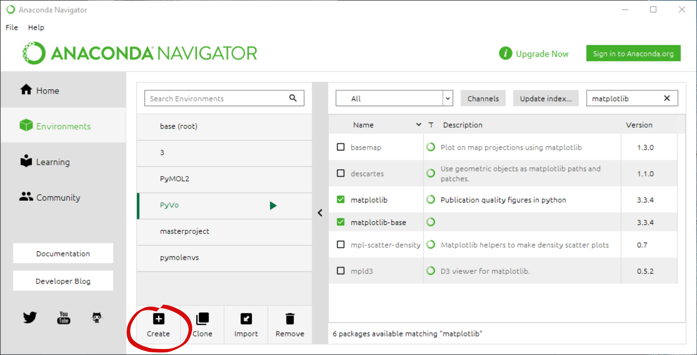
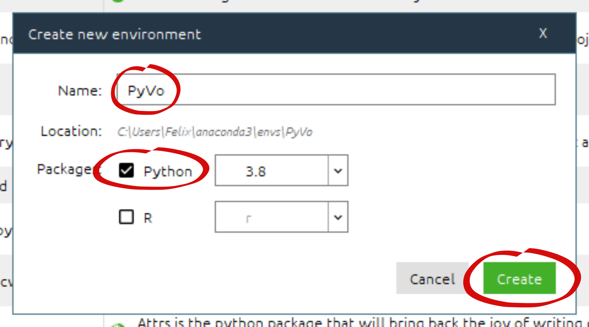
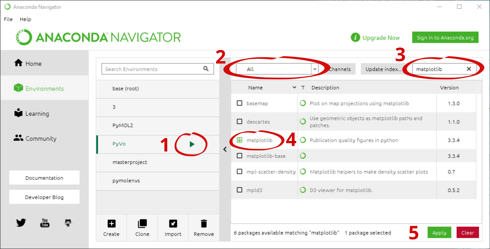
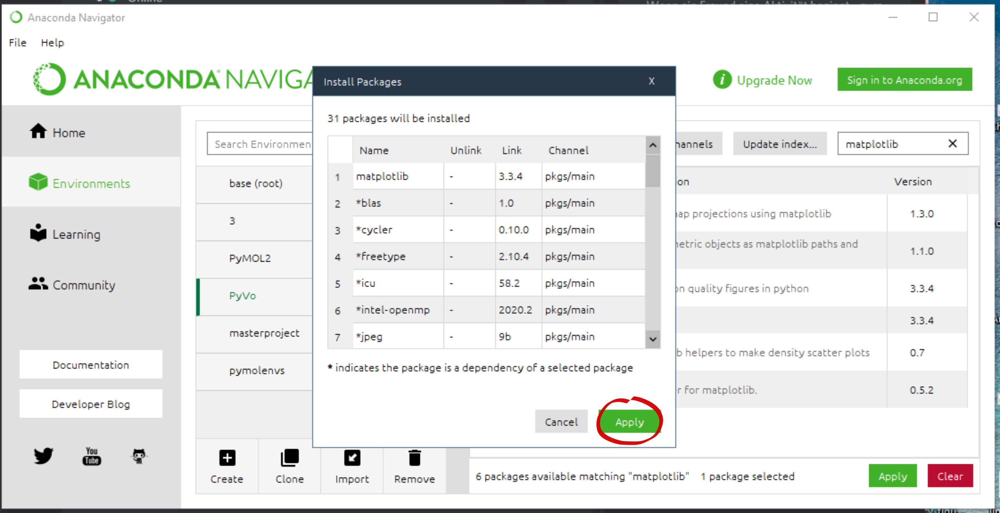
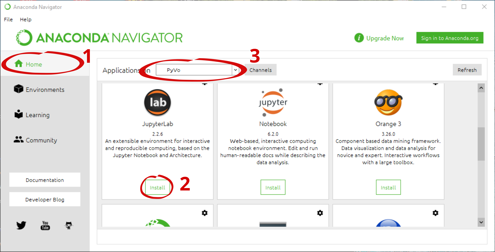

Installation¶
Für die Verwendung der Programme aus der Vorlesung werden wir einen Packetmanager installieren. Dieser sorgt dafür, dass wir alle benötigten Bibliotheken einfach in einem definiertem Ecosystem installieren können.
Anaconda¶
Anaconda kann auf folgender Webseite heruntergeladen werden:
https://www.anaconda.com/products/individual
Installieren sie Anaconda nach folgender Anleitung:
Erstellen eines Envorinments¶
Für die Vorlesung werden wir ein Environment erstellen, indem die Aufgaben bearbeitet werden können. Dort werden alle Pakete installiert, die wir verwenden werden.
Öffnen Sie den Anaconda Navigator über die Suchleiste.
Navigieren Sie zu den Environments.

Erstellen Sie nun ein neues Environment mit Create. 
Tippen Sie den Namen des neuen Environments ein und wählen Sie für Packages “Pyhton” aus. Durch klicken auf Create wird das neue Environment erstellt. 
Öffnen das Anaconda Promt über die Suchleiste und führen Sie folgenden Befehl aus:
conda create --name PyVo
Öffnen Sie das Linux Terminal und führen Sie folgenden Befehl aus:
conda create --name PyVo
Installation der benötigten Pakete¶
Für die Scripte werden 3 zusätzliche Pakete und Jupyter-Lab benötigt.
Um ein neues Paket mit dem Anaconda Navigotor zu installieren sollten sie wie folgt vorgehen:
1 Klicken Sie auf das erstellte Environment um es zu aktivieren.
2 Ändern Sie die Auflistung der Pakete von Installed zu All
3 Suchen Sie folgende Pakete und wählen Sie diese wie in 4 aus:
numpy
matplotlib
pandas
5 Bestätigen Sie die Auswahl mit Apply.

Mit der Bestätigung wird in einem neuen Fenster aufgelistet, welche zusätzlichen Pakete installiert werden.

Jupyter-Lab kann im Home Menü 1 installiert und gestartet werden.
Dafür kann einfach unter JupyterLab auf Install oder Launch 2 geklickt werden.
Achten Sie darauf, dass unter 3 auch das aktuelle Environment ausgewählt ist.

Aktivieren Sie das Environment mit folgendem Befehl:
conda activate PỳVo
Um die benötigten Pakete zu installieren führen Sie diese Befehle nacheinander aus:
conda install numpy
conda install matplotlib
conda isntall pandas
conda install -c conda-forge jupyterlab
Starten Sie Jupyter Lab mit dem Befehl:
jupyter-lab
Aktivieren Sie das environment mit folgendem Befehl:
conda activate PyVo
Um die benötigten Pakete zu installieren führen Sie diese Befehle nacheinander aus:
conda install numpy
conda install matplotlib
conda isntall pandas
conda install -c conda-forge jupyterlab
Starten Sie Jupyter Lab mit dem Befehl:
jupyter-lab